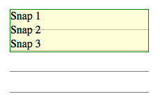

Status: ED
Shortname: css-line-grid
Level: 1
Group: csswg
TR: http://www.w3.org/TR/css-line-grid-1/
Previous Version: http://www.w3.org/TR/2014/WD-css-line-grid-1-20140916/
ED: http://dev.w3.org/csswg/css-line-grid/
Editor: Elika Etemad, Invited Expert, http://fantasai.inkedblade.net/contact
Editor: Koji Ishii, Invited Expert, kojiishi@gluesoft.co.jp
Editor: Alan Stearns, Adobe Systems, Inc., stearns@adobe.com
Abstract: This module contains CSS features for aligning content to a baseline grid.
Introduction
Background
This section is not normative.
This specification provides features
to align lines and blocks
to invisible grids in the document.
Aligning lines and blocks to grids
provides the following benefits:
Vertical rhythm is kept for better readability.
Lines are aligned between columns in multi-column documents.
The top and the bottom margins of pictures are made equal,
while keeping the vertical rhythm of text before and after the pictures.
Layout lines are at the same position on every page in paged media.
Keeping the position of the bottom line of a page has benefits for
design and readability.
This also improves the readability of duplex printing,
two pages spreads,
and displaying on slow display devices like e-ink.
East Asian layouts require vertical rhythm
more often than other scripts do,
even in single column, non-paged media documents,
as defined in [[JLREQ]].
There are several types of objects in a document
that can break the vertical rhythm.
Examples include lines with different sizes of text,
pictures, and tables.
Vertical rhythm kept through pictures and different size of text in a multi-column document.
Large text wraps within line grids.
When a different size of text,
such as a headings wraps,
it is usually aligned to grids as a block
and the lines within the block do not align.
Sidenotes (and footnotes for that matter) are often set
at a smaller size than the basic text.
This smaller text should still line up with the basic text.
Authors can try to achieve this effect
by calculating appropriate font-size, line-height,
and margins*, but lack the proper tools to get the baselines to align.
Even if the author controls all this,
the baselines won't align. And careful
calculations can be thrown off by user stylesheets.
Sidenotes are set at a smaller size, and baselines don't align.
Sidenote with baselines aligned to the body text.
East Asian layouts may require width
be a multiple of em without fractions.
East Asian layouts may require grid-like features
in inline progression direction as well.
It is often desirable in East Asian layouts
to make the line width
a multiple of em without fractions.
Because most East Asian characters have 1em advance
and most East Asian documents are justified,
this minimizes cases where justification needs to expand character spacing.
This module provides the following capabilities:
Defining grids in the line progression direction.
Controlling how lines and blocks align to the grids.
It is important to control these capabilities independently,
so that, for example,
aligning to grids can be turned off for tables,
but can then be turned back on
for aligning the following text to the grids.
Module Interactions
This module extends the line box model
defined in [[!CSS21]] sections 9.4.2 and 10.8.
Values
This specification follows the
CSS property definition conventions
from [[!CSS21]].
Value types not defined in this specification
are defined in CSS Level 2 Revision 1 [[!CSS21]].
Other CSS modules may expand
the definitions of these value types:
for example [[CSS3COLOR]],
when combined with this module,
expands the definition
of the <color> value type
as used in this specification.
In addition to the property-specific values
listed in their definitions,
all properties defined in this specification
also accept the
inherit
keyword as their property value.
For readability it has not been repeated explicitly.
Defining a Line Grid: the 'line-grid' property
Name: line-grid
Value: match-parent | create
Initial: match-parent
Applies to: block, flex and grid containers
Inherited: no
Animatable: no
Percentages: N/A
Media: visual
Computed Value: as specified
Specifies whether this box creates
a new baseline grid for its descendants
or uses the same baseline grid as its parent.
(Each box always has an associated line grid.
However, whether a box or its contents snap
to a line grid is determined
by 'line-snap' and 'box-snap'.)
The values of this property have the following meanings:
match-parent
Box assumes the line grid of its parent.
create
Box creates a new line grid
using its own font and line layout settings.
The line grid consists of a series
of horizontal lines corresponding
to all the baselines
(alphabetic, text-top, text-bottom,
mathematic, central, hanging, etc.)
and to the line-over and line-under edges,
positioned where they would fall
if the contents of this element consisted entirely
of line boxes filled with text (no sub-elements)
using the first available font.
If the box is paginated,
the line grid is restarted on each page;
since line boxes cannot be fragmented,
no page begins with the bottom part of a line's grid.
If 'line-grid' is used within an ''@page'' rule,
the line grid is created based on the page box,
not the page area.
This allows all pages of a document to share a common grid,
even if page margins, border and/or padding change.
If a page box line grid is defined,
this grid is used when 'line-grid' computes to ''match-parent''
on the root element of the page area.
If no page box line grid is defined,
the root element creates a new line grid.
Issue: The names of these values is currently up for debate.
Current suggestions for ''match-parent''
include ''match-parent'' and ''normal'';
those for ''create'' include ''create'' and ''new''.
The original proposal for line grids
allowed an element to create a named grid.
This property could still be extended to do this in the future.
There might need to be an offset
for more complicated designs.
How to set this offset is problematic:
usually it's not a fixed length,
but the distance to clear some header content.
This could be added to a later level of line-grid.
Snapping to a Grid
Snapping Line Boxes: the 'line-snap' property
Name: line-snap
Value: none | baseline | contain
Initial: none
Applies to: all elements
Inherited: yes
Animatable: no
Percentages: N/A
Media: visual
Computed Value: as specified
This property applies to all the line boxes
directly contained by the element,
and, when not none,
causes each line box to shift
(usually downward, possibly by zero)
until it snaps to the line grid
specified by 'line-grid'.
(The unshifted position is the position that
would be determined by normal line stacking rules,
with consideration of any new controls
defined by other modules such as [[CSS3LINE]].)
Shifting line boxes in this way affects layout –
it is not merely a display translation.
If a line box is shifted downward,
then subsequent line boxes will be laid out
using the new shifted position as input
to their line stacking rules.
Values have the following meanings:
none
Line boxes do not snap to the grid; they stack normally.
baseline
The dominant baseline snaps with the matching baseline on the
line grid applying to the element.
contain
Two baselines are used to align the line box:
the line box is snapped
so that its central baseline
is centered between one
of the line grid's text-over-edge baselines
and a subsequent (but not necessarily consecutive)
text-under-edge baseline.
An element can have additional block layout constraints
(such as centering or 'box-snap')
that can complicate line snapping.
In these cases,
implementations must produce
the same result as the steps below:
Line snap as if the layout constraint does not apply
Apply the layout constraint to the block
Adjust exactly one line box shift
or space at the beginning or end of the block
such that all of the snapping lines meet the line grid
while maintaining the block layout constraint.
The single adjustment chosen must be
the smallest shift needed to achieve the result
without causing overflow.
In some cases lines of equal line height
will not align perfectly to a baseline grid:
this happens, for example,
when fonts (of the same size)
with different baseline tables are mixed on a line.
For this reason,
if shifting the line
by the largest difference
between the smallest ascent and largest ascent
of a single size used on the line
would result in a smaller shift,
then the contents of the line box
are shifted up within the line box
so as to allow the line to snap
without jumping downward
to the next grid line.
Line boxes almost always shift downward
(towards the block-end direction)
when snapping to a line grid.
Here there are three lines
with 20px line-height
and line-snap:baseline
that should snap to a 30px line grid.
Each line box shifts down
so that the baselines align
with the grid lines.

Before line snapping
After line snapping
In the figures below,
there are two additional lines
from h3 elements with line-snap:none.
These lines do not shift
to align to the grid,
but their positions can change
based on the shifting of lines around them.
In this example,
lines 1 2 and 3 shift down
to snap their baselines to the grid lines,
and line B has normal line box placement
just below the line above.
Before line snapping
After line snapping
The block containing all of these lines
might not be top-aligned within its container.
In the figures below,
the block containing the elements is centered.
In a centered situation,
you have to align baselines
while maintaining centering.
This can be done in two shift-and-center steps.
First, shift the snapping lines
as if the block was top-aligned
(as in figure 9 above),
then remove the shift
for the very first snapping line.
After removing the first shift,
try centering the block.
This is almost certain
to throw the baseline alignment off.
You can see one such result
in the partial shifting figure below.
Second, measure the distance
from the first snapped line's baseline
to the grid lines above and below,
looking for the closest grid line
to that baseline.
If the closest grid line
is in the block-start direction,
then add space below the last line in the block
equal to twice that distance.
Then the block is centered again,
which will align all of the snapped lines to the grid.
Partial shifting
Full line snapping
If the closest grid line
is in the block-end direction,
then the first snapped line is shifted downward
by twice that distance.
Then the block is centered again,
which will again align all of the snapped lines to the grid.
Partial shifting
Full line snapping
An end-aligned block also uses two steps,
but is simpler than the centered case.
First, shift the snapping lines
as if there were no end-alignment
(as in figure 9 above),
then end-align the block.
Second, shift the entire block contents upwards
until the last snapped line aligns to a grid line.
In this example, the shift is very minor.
Before snapping
After line snapping
Snapping Block Boxes: the 'box-snap' property
Issue: This is a rough draft of trying to solve
the box-snapping problem.
Issue: Some optional box values
(margin-box, border-box)
could be added to the before and after values
to allow snapping various box model edges
to the line grid.
Issue: An auto value could be useful -
one that defaults to center,
but snaps to before if it's the first block in a fragment container,
and snaps to after if it's the last block in a fragment container.
Name: box-snap
Value: none | block-start | block-end | center | first-baseline | last-baseline
Initial: none
Applies to: block-level boxes and internal table elements except table cells
Inherited: yes
Animatable: no
Percentages: N/A
Media: visual
Computed Value: as specified
Specifies how the block is snapped to the baseline grid.
Values have the following meanings:
none
The block is not snapped to any grid.
block-start
The block-start edge is snapped to the nearest grid line.
block-end
The block-end edge is snapped to the nearest grid line.
center
The block is centered centered between
one of the baseline grid's text-over baselines and a subsequent
(but not necessarily consecutive) text-under baseline.
first-baseline
The first line box's dominant baseline is snapped to the nearest grid line.
last-baseline
The last line box's dominant baseline is snapped to the nearest grid line.
Snapping block boxes always uses the line grid of the box parent
(a block's own line grid has no effect on box snapping).
When snapping to baselines on a line grid,
either the text-over-edge
or text-under-edge baseline is chosen:
whichever one is on the matching side
of the central baseline.
For example,
when snapping the block-start edge
in horizontal writing mode,
the text-over-edge is chosen.
In some cases the text-under-edge
might be used instead for the block-start edge:
for example,
when the writing mode of the line grid
doesn't match that of the affected element,
or when due to the 'text-orientation' settings
the text-under-edge corresponds to the block-start edge.
To snap a block-level element to a grid line,
the effective margin is increased at that edge.
If, however, the box is an empty block that could be
collapsed through,
then this property has no effect. [[!CSS21]]
When applied to table row group and table row boxes,
'box-snap' only affects the before and after edges,
and only if those edges are not
at the beginning or end of the table, respectively.
To snap a before edge on a table row or row group,
the preceding row's height is increased.
To snap an after edge on a table row or row group,
the affected row's height is increased.
When applied to table column group and table column boxes,
'box-snap'only affects the start and end edges,
and only if those edges are not
at the start or end of the table, respectively.
How the space is redistributed among columns
to satisfy snapping constraints is not defined, however:
In an auto-sized table no column may be smaller than its minimum content width.
The resulting table must not exceed its original measure if it had a non-auto measure.
The adjusted widths must not cause the table to overflow its containing block any more than it would with ''box-snap: none''.
To satisfy these constraints, some column edges may remain unsnapped.
Acknowledgments
This module was made possible by the advice and contributions of
Tab Atkins,
Dave Cramer,
Dave Hyatt,
Bem Jones-Bey,
Håkon Wium Lie,
Shinyu Murakami,
Liam Quin,
and the CSS Working Group members.